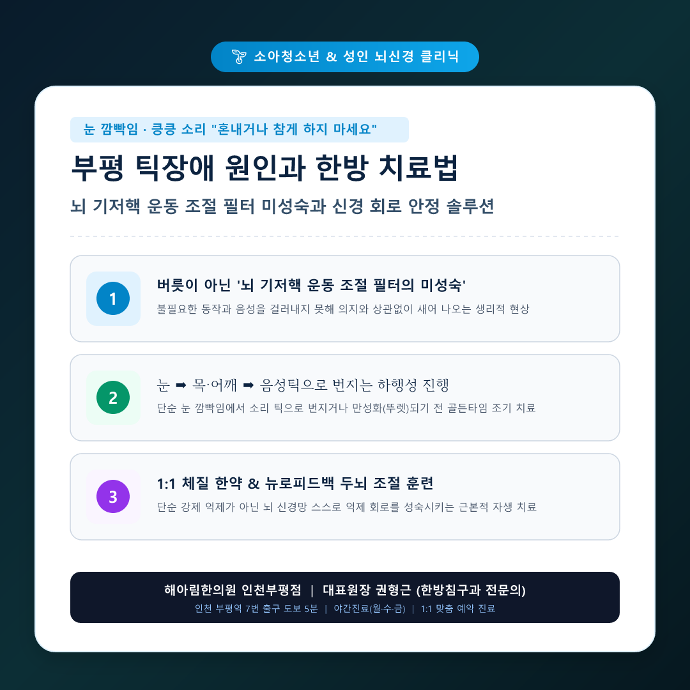
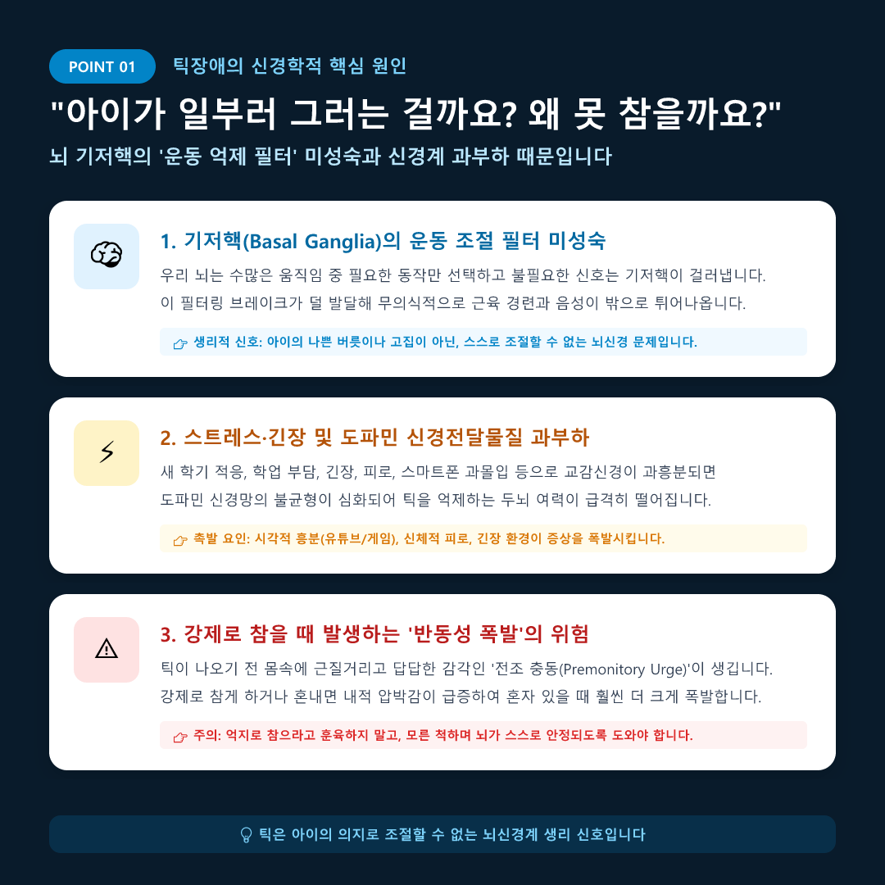
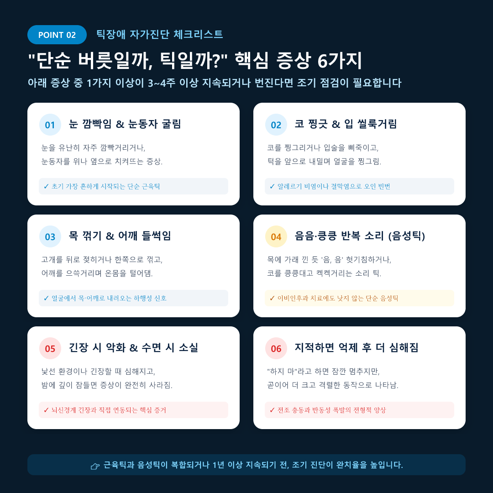
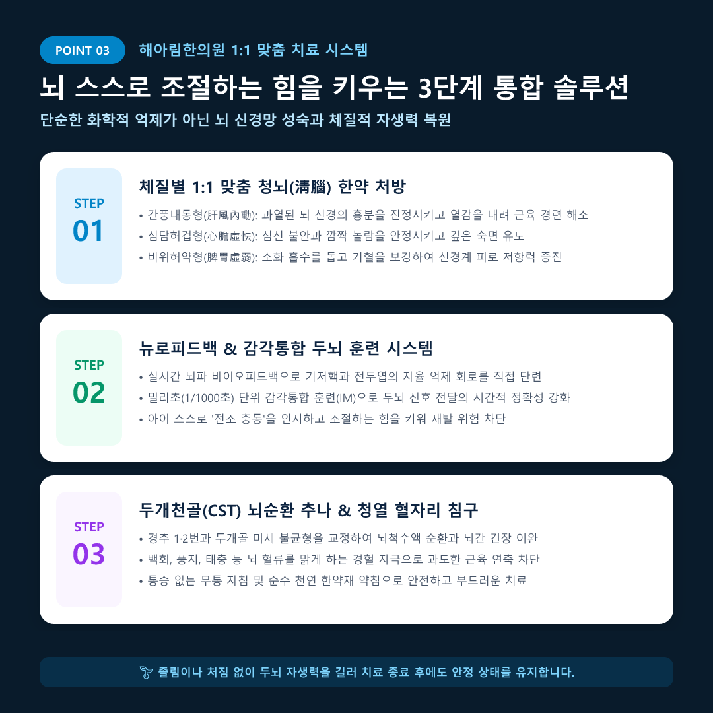
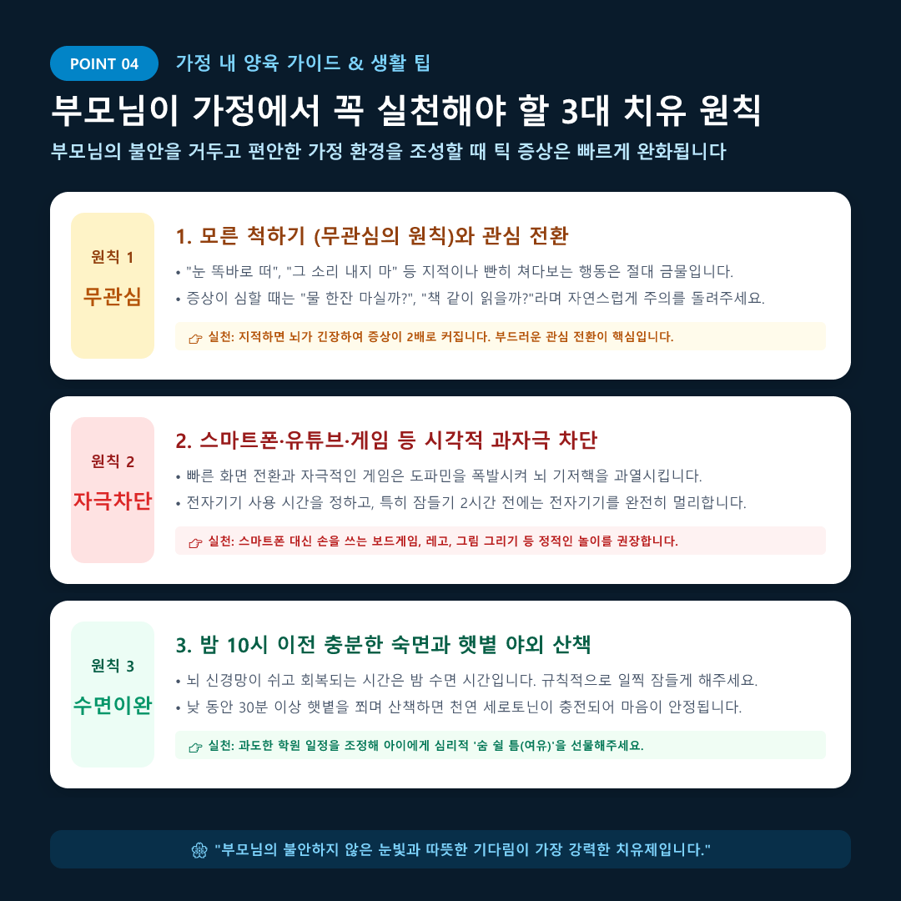

[부평 한의원] 틱장애 원인, 눈 깜빡임과 킁킁 소리 "혼내거나 참게 하지 마세요"
"처음엔 결막염인 줄 알았는데 한 달 넘게 눈을 심하게 깜빡여요."
"선생님이 수업 중에 킁킁거리는 소리 좀 그만 내라고 주의를 주셨대요."
"‘하지 마!’라고 혼내면 잠깐 멈췄다가 혼자 있을 때 온몸을 부르르 떨며 더 심해져요..."
안녕하세요, 해아림한의원 인천부평점 권형근 대표원장(한방침구과 전문의)입니다.
부평역 인근뿐만 아니라 삼산동, 산곡동, 청천동, 갈산동, 그리고 부천과 계양구에서도 자녀의 갑작스러운 눈 깜빡임이나 이상한 소리 때문에 걱정스러운 얼굴로 진료실을 찾아오시는 부모님들이 많습니다.
처음에는 안과에서 알레르기 결막염 안약을 넣거나 이비인후과에서 비염 치료를 받아보지만, 몇 주가 지나도 호전되지 않고 오히려 코 찡긋거림, 목 꺾기, 헛기침 소리로 번지면서 뒤늦게 틱장애(Tic Disorder)임을 알게 되는 경우가 대다수입니다.
하지만 가장 마음 아픈 것은 "아이가 산만해서 장난치는 줄 알고 심하게 야단쳤다"며 눈물을 흘리시는 부모님들의 자책입니다. 결론부터 단호하게 말씀드립니다. 틱은 아이가 일부러 하는 버릇이 아니며, 아이의 의지로 참을 수 있는 문제가 절대 아닙니다.
[🖼️ 이미지 01 삽입: 01_naver_main_thumbnail.jpg]

🔍 POINT 01. 틱장애의 신경학적 원인: "뇌 기저핵 필터의 미성숙"
우리 뇌 속 깊은 곳에는 기저핵(Basal Ganglia)이라는 부위가 자리 잡고 있습니다. 기저핵은 몸에서 일어나는 수많은 무의식적 근육 신호와 음성 중 '필요한 동작만 선택해 내보내고, 불필요한 신호는 꽉 걸러내는 정밀한 브레이크 필터' 역할을 담당합니다.
그런데 성장기 소아청소년의 경우 이 기저핵의 신경 회로가 미처 완전히 성숙하지 못해, 걸러져야 할 불필요한 운동 및 음성 신호가 마치 수도꼭지 틈새로 물이 새어나오듯 의지와 상관없이 밖으로 튀어나오는 생리적 현상이 바로 틱장애입니다.
- 도파민 신경전달물질의 과흥분: 기저핵을 통제하는 도파민 회로의 균형이 깨지면 근육 수축 억제 기능이 급격히 저하됩니다.
- 스트레스와 긴장 환경의 자극: 신학기 반 배정, 학업 스트레스, 낯선 환경, 스마트폰 영상 과몰입 등으로 교감신경이 과부하되면 기저핵의 조절 여력이 바닥나 증상이 폭발합니다.
- 참을수록 커지는 '전조 충동(Premonitory Urge)': 틱이 나타나기 직전 목이나 눈 주위가 간질간질하고 답답해 견딜 수 없는 느낌이 듭니다. 억지로 참게 강요하면 풍선에 바람을 불어넣듯 뇌 압박감이 극대화되어 나중에 2~3배 격렬한 반동성 발작으로 이어집니다.
[🖼️ 이미지 02 삽입: 02_point1_cause.jpg]

📋 POINT 02. 틱 증상 4단계 진행과 자가진단 체크리스트
틱장애는 초기에 얼굴에서 시작하여 점차 아래 신체 부위로 번져나가는 '하행성(아래로 퍼짐)' 진행 패턴을 보입니다. 얼굴 부위의 단순 눈 깜빡임일 때 조기에 개입해야 만성화와 뚜렛증후군으로의 악화를 막을 수 있습니다.
📌 틱 증상의 4단계 진행 경과
- 1단계 (초기 단순 근육틱): 눈 깜빡임, 눈동자 치켜뜨기, 코 찡긋거리기, 입술 삐죽거리기
- 2단계 (중기 복합 근육틱): 고개 뒤로 젖히기, 목 꺾기, 어깨 들썩거리기, 배 꿀렁임, 팔다리 털기
- 3단계 (음성틱 동반): "음, 음" 헛기침 소리, 킁킁대기, 켁켁거리기, 동물 소리, 특정 단어 반복
- 4단계 (만성화 및 뚜렛증후군 위험): 운동틱과 음성틱이 복합되어 1년 이상 악화와 완화를 반복
[🖼️ 이미지 03 삽입: 03_point2_checklist.jpg]

🩺 POINT 03. 해아림한의원의 3단계 1:1 맞춤 통합 솔루션
양방의 신경정신과 약물(항도파민제)은 틱 증상을 단기간에 눌러줄 수 있지만, 투약을 중단하면 반동으로 재발하거나 졸림, 무기력, 체중 증가, 집중력 저하 등의 부작용을 걱정하시는 부모님들이 많습니다.
해아림한의원 인천부평점에서는 단순히 화학적으로 증상을 억누르는 것이 아니라, 뇌 스스로 불필요한 신호를 걸러낼 수 있도록 '뇌 자생력과 조절 억제 회로'를 성숙시키는 3단계 근본 치료를 시행합니다.
- 1단계: 체질별 1:1 맞춤 청뇌(淸腦) 한약
• 간풍내동형(肝風內動): 상초로 치솟는 뇌 신경의 과열을 시원하게 식히고 근육 연축 완화
• 심담허겁형(心膽虛怯): 예민해진 심장과 담력을 튼튼히 보강하여 사소한 소리와 긴장에 놀라지 않게 안정
• 비위허약형(脾胃虛弱): 기혈 순환과 소화기를 도와 두뇌 신경의 만성 피로 회복
- 2단계: 뉴로피드백 & 감각통합 두뇌 훈련 시스템
• 뇌파 바이오피드백 훈련을 통해 기저핵-전두엽 억제 제어 루프를 직접 단련합니다.
• 밀리초(1/1000초) 단위 인터랙티브 메트로놈(IM) 감각통합 훈련으로 뇌신경 신호의 타이밍 조절력을 강화해 아이 스스로 전조 충동을 다스리게 돕습니다.
- 3단계: 두개천골(CST) 추나요법 & 청열 침구 치료
• 상부 경추(목뼈 1·2번)와 두개골 봉합부의 미세 긴장을 부드럽게 이완하여 뇌척수액 순환을 정상화합니다.
• 통증 없는 무통 자침과 태충, 풍지, 신문혈 자극으로 전신 긴장도를 낮추고 자율신경 균형을 바로잡습니다.
[🖼️ 이미지 04 삽입: 04_point3_treatment.jpg]

💡 POINT 04. 부모님이 가정에서 꼭 지켜야 할 3대 치유 원칙
한의원에서의 치료만큼이나 중요한 것이 바로 '가정 내 심리적 안전지대 구축'입니다. 부모님의 태도와 가정 환경이 변할 때 틱 증상은 눈에 띄게 줄어듭니다.
- 모른 척하기 (무관심의 원칙) & 자연스러운 주의 환기:
틱 동작을 할 때 "눈 똑바로 떠", "소리 내지 마"라고 지적하거나 쳐다보지 마세요. 지적은 수치심과 불안을 자극해 틱을 2배로 악화시킵니다. 대신 "물 한잔 같이 마실까?", "책 같이 볼까?"라며 부드럽게 관심을 다른 활동으로 돌려주세요.
- 스마트폰, 유튜브, 자극적 게임 철저한 제한:
초당 수십 프레임이 빠르게 바뀌는 영상과 게임은 도파민을 과다 분비시켜 뇌 기저핵을 심각하게 과열시킵니다. 전자기기 시간을 제한하고, 손을 사용하는 레고나 그림 그리기, 보드게임 등 정적인 활동을 늘려주세요.
- 밤 10시 이전 충분한 숙면과 햇볕 야외 산책:
뇌 신경망이 쉬고 회복되는 시간은 밤 수면 시간입니다. 규칙적인 수면 리듬을 지켜주시고, 낮 동안 30분 이상 햇볕을 쬐며 걷게 해주시면 천연 세로토닌이 충전되어 마음의 안정을 찾게 됩니다.
[🖼️ 이미지 05 삽입: 05_point4_selfcare.jpg]

🌿 권형근 대표원장의 따뜻한 치유 메시지
"진료실에서 만나는 많은 부모님들께서 '내가 아이를 잘못 키워서 이런 병이 생긴 건 아닐까'라며 가슴을 치십니다.
하지만 결코 부모님의 잘못이 아니며, 아이의 나쁜 버릇도 아닙니다.
틱은 단지 아이의 두뇌 신경망이 자라는 과정에서 잠시 조절 필터의 균형을 잃고 보내는 '쉬어가라는 조용한 신호'일 뿐입니다.
부모님의 흔들리지 않는 편안한 눈빛과 따뜻한 기다림, 그리고 신경계를 바로잡는 정밀한 한방 치료가 함께한다면 우리 아이는 반드시 건강하고 밝은 일상을 되찾을 수 있습니다. 해아림이 그 치유의 여정에 든든한 동반자가 되어 드리겠습니다."
📍 해아림한의원 인천부평점 진료 안내
• 대표원장: 권형근 (한방침구과 전문의 / 한의학 석사)
• 진료 과목: 소아청소년·성인 틱장애, ADHD, 공황장애, 불안장애, 우울증, 불면증, 자율신경실조증, 이명·어지럼증
• 위치: 인천 부평구 부평대로 1412 (부평역 7번 출구 도보 5분)
• 전화 예약 및 문의: 032-719-3472
• 진료 시간:
- 월 / 수 / 금: 오전 10시 ~ 오후 8시 (야간진료)
- 화 / 목: 오전 10시 ~ 오후 7시
- 토 / 공휴일: 오전 10시 ~ 오후 3시 (점심시간 없음)
- 일요일: 정기 휴진
• 네이버 예약 및 카카오톡 채널 '해아림한의원 인천부평점'을 통해 사전 예약 시 대기 시간을 최소화하실 수 있습니다.
#부평틱장애 #부평한의원틱장애 #틱장애원인 #어린이틱장애 #눈깜빡임틱 #음성틱치료 #부평소아신경과 #인천틱장애한의원 #기저핵운동필터 #해아림한의원부평점